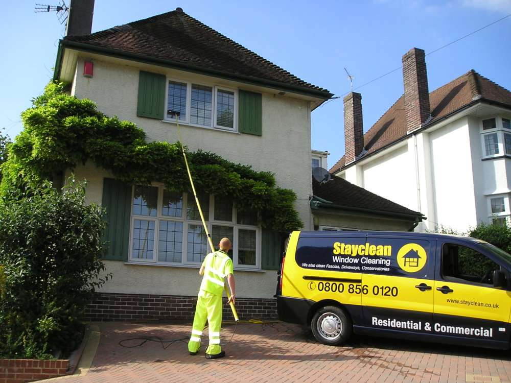
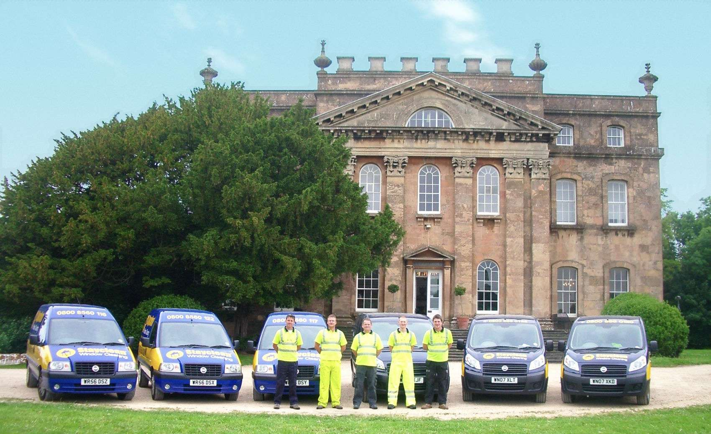
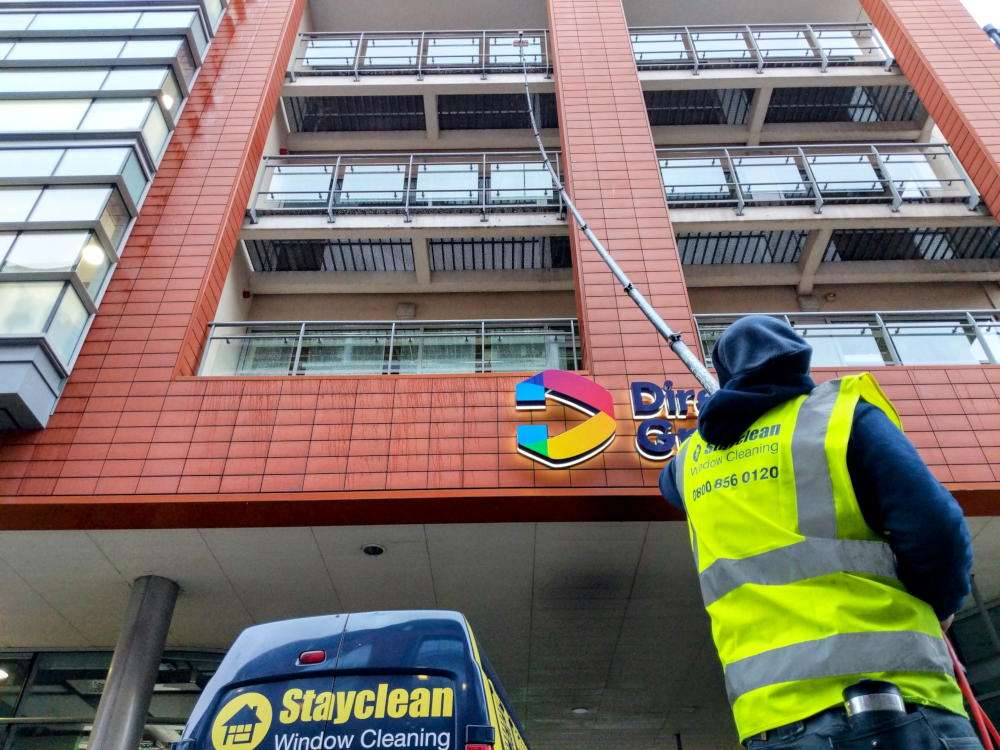
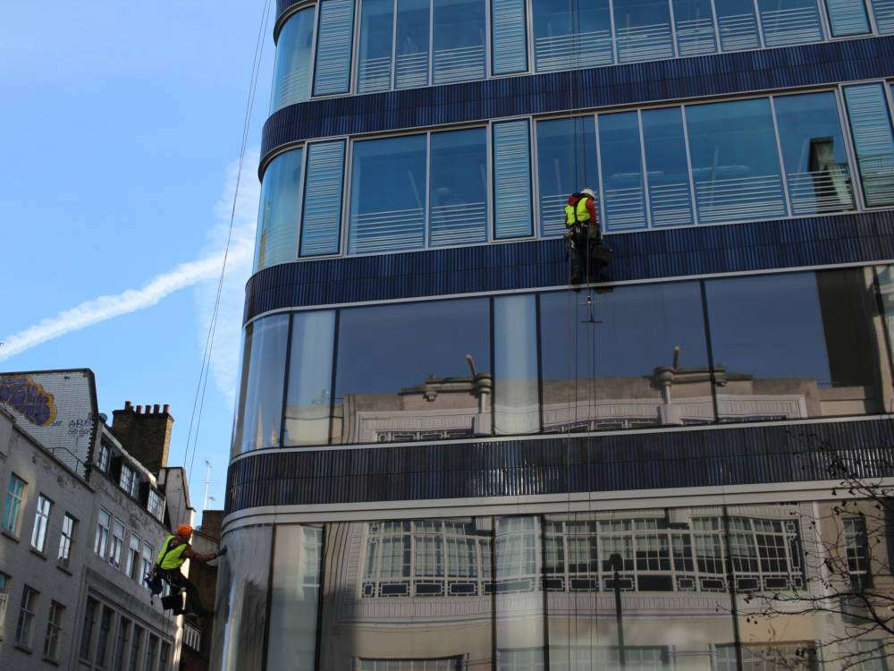
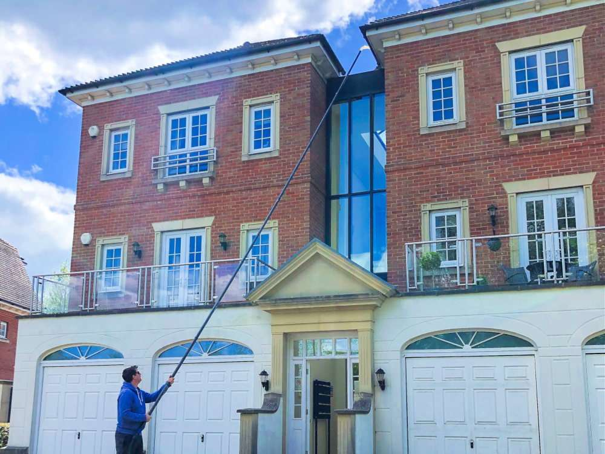

Homes
Domestic window cleaning
Regular and one-off exterior cleaning for houses and suitable flats. Glass, frames, sills, and agreed accessible doors can be included.

Bristol window cleaners since 1997
Friendly, professional cleaning for homes, businesses, gutters, and high-level glazing, with the method matched to your property.
Window cleaning
Tell Stayclean what needs cleaning and how the property is used. The team will assess the access, agree the scope, and quote the right approach.

Homes
Regular and one-off exterior cleaning for houses and suitable flats. Glass, frames, sills, and agreed accessible doors can be included.

Workplaces
Planned cleaning for shops, offices, schools, blocks, and managed sites, with timing and access agreed around the property.

Specialist access
Water-fed poles and specialist access for suitable higher or awkward glazing, assessed before the method is confirmed.

Gutter cleaning
Leaves, moss, and loose debris can restrict rainwater and send it over walls, paths, doors, or windows. Stayclean uses high-reach gutter-vac equipment and inspection cameras on suitable Bristol properties, working from the ground where conditions allow.
Method matched to the property
Send the Bristol postcode, property type, and access notes. Photos of each elevation can help with height and access.
Know whether the quote covers glass, frames, sills, doors, internal windows, gutters, or specialist access.
Pure water for suitable exteriors, traditional tools for internal glass, or specialist equipment where the building needs it.
The team works carefully around the property, packs away equipment, and confirms when the agreed work is complete.
Built in Bristol
Stayclean began in 1997 with a local round, basic equipment, and an old Ford Fiesta carrying the ladders. Today the team serves Bristol homes, businesses, managed sites, and higher-level properties with dedicated vehicles and modern equipment.
Local history matters because service work depends on communication, access, and people doing what they said they would do.
Read the Stayclean storyPublished Google feedback
"I had my windows cleaned today by Stayclean windows and they have done a great job and the chap that cleaned them was very friendly and polite."
"Stayclean have been cleaning our windows for a couple of years now, and always do a good job. Their communications regarding cleaning day and any rare change are prompt and clear. No complaints."
Bristol coverage
Regular rounds cover established areas across the city. These are examples, not the limit of coverage.
Round availability varies. Commercial and specialist work may cover a wider area.
Clifton, Redland, Cotham, Stoke Bishop, Westbury-on-Trym.
Bishopston, Horfield, Filton, Frenchay, Bradley Stoke.
Bedminster, Brislington, Whitchurch, Keynsham, Longwell Green.
Before you request a quote
Yes. Stayclean provides regular exterior cleaning and can quote for one-off work. The right option depends on the property, access, and what needs cleaning.
Not always for exterior work, provided there is safe access to every agreed area and any locked gates are arranged in advance.
Accessible exterior glass, frames, sills, and agreed doors can be included. Internal window cleaning is quoted separately, so the included areas stay clear.
Ready when you are
Share the Bristol postcode, service, and access details. Stayclean normally replies within one working day with the next step.